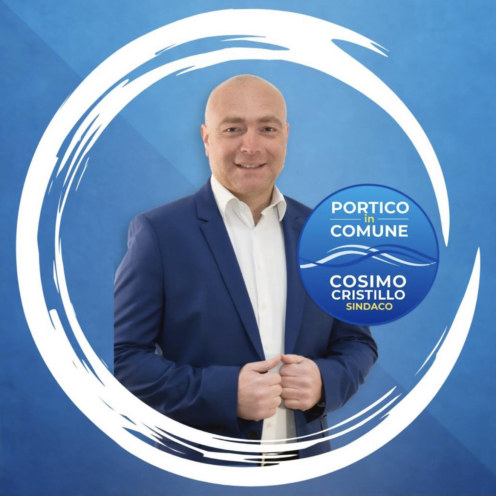
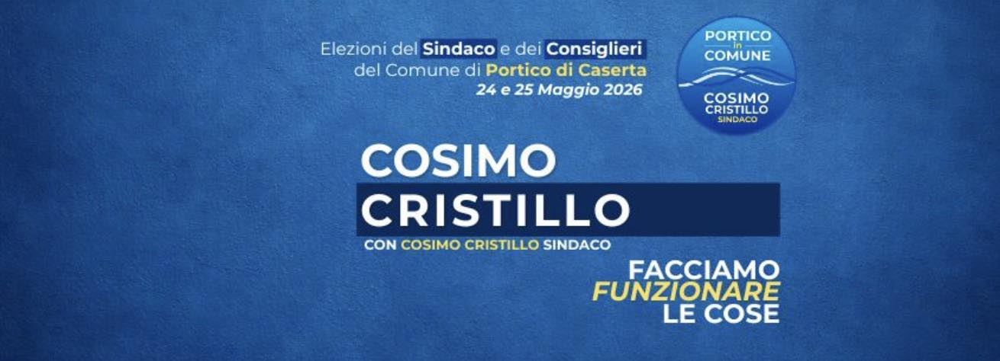
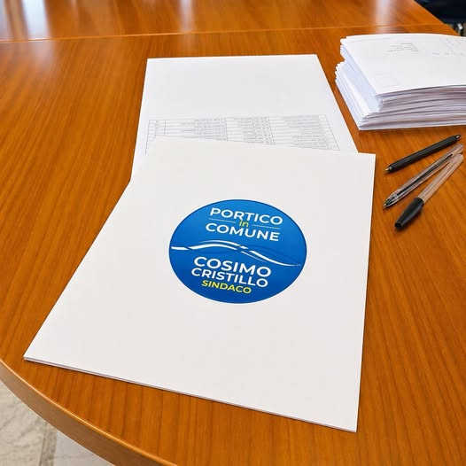

Candidato Sindaco — Portico di Caserta
Facciamo
funzionare
le cose.

Il nostro progetto
Abbiamo depositato la lista. Da questo momento «Portico in Comune» è ufficialmente in campo.
Non è solo un passaggio formale. È il punto in cui un lavoro fatto in silenzio diventa pubblico. Persone, idee, impegno: tutto prende forma.
Oggi il nostro simbolo non è solo un'immagine — è il segno di un percorso che parte da lontano e guarda avanti.
Affronteremo la campagna elettorale per come siamo stati fin dall'inizio: con serietà, con presenza, senza promesse vuote.

I nostri impegni
Il nostro obiettivo è chiaro: far funzionare le cose. E farlo subito, partendo da ciò che la comunità chiede ogni giorno.
Uffici più efficienti, tempi certi, risposte concrete ai cittadini. La burocrazia al servizio delle persone, non il contrario.
Procedure chiare e accessibili, sportelli vicini alle esigenze reali, digitalizzazione dove può aiutare davvero.
Aree verdi, luoghi di aggregazione e spazi pubblici curati: restituire vita e dignità al territorio di Portico di Caserta.
Non una lista raccolta all'ultimo momento: persone diverse con competenze complementari, pronte a lavorare insieme per la città.
Niente promesse vuote. Solo obiettivi realizzabili, con un programma chiaro e la volontà di essere presenti ogni giorno.
Partire subito da ciò che funziona e migliorare ciò che non va: un approccio pragmatico al governo della città.
Chi siamo
«Portico in Comune» è una lista civica nata dalla comunità, per la comunità. Non è la somma di tessere di partito, ma di persone che hanno scelto di metterci la faccia.
Il nostro simbolo — le onde blu che guardano avanti — rappresenta un percorso che parte da lontano e si proietta nel futuro di Portico di Caserta.
Oggi depositiamo la lista. Il lavoro vero comincia adesso. Noi ci siamo.

Elezioni Comunali 2026
Si vota per il Sindaco e i Consiglieri del Comune di Portico di Caserta.
Segna la lista Portico in Comune e scrivi Cosimo Cristillo.